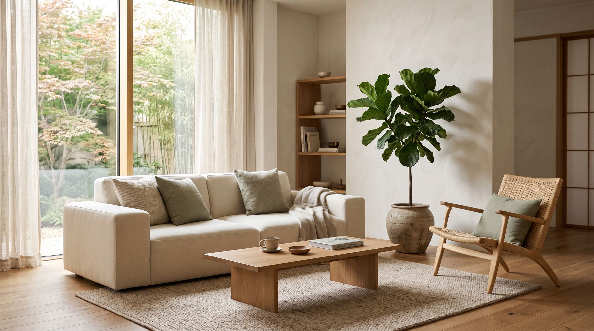
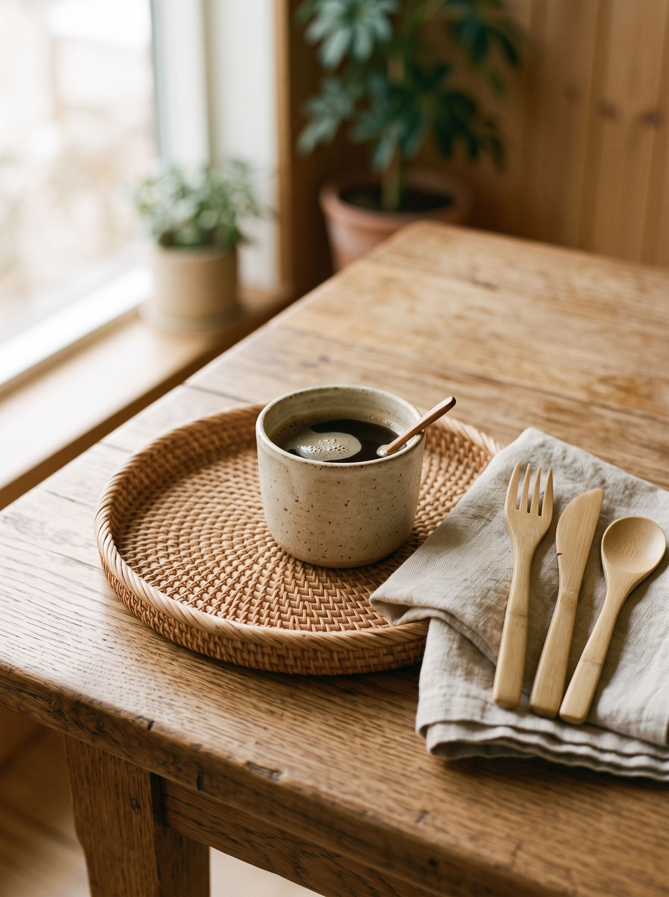
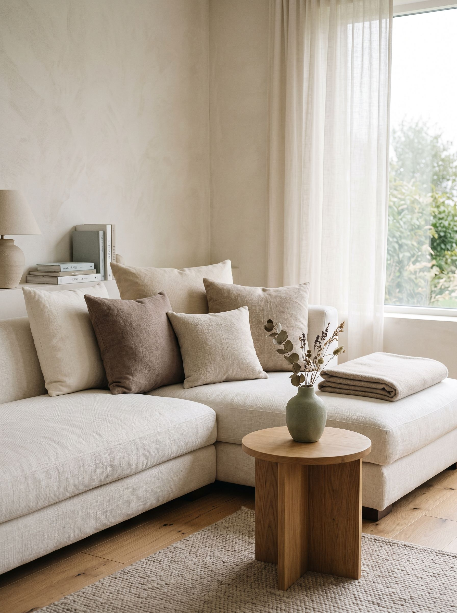
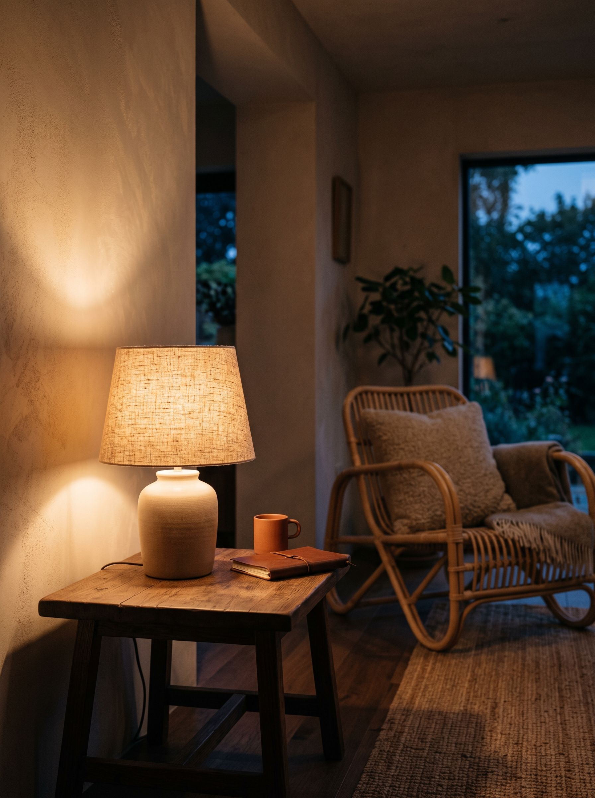
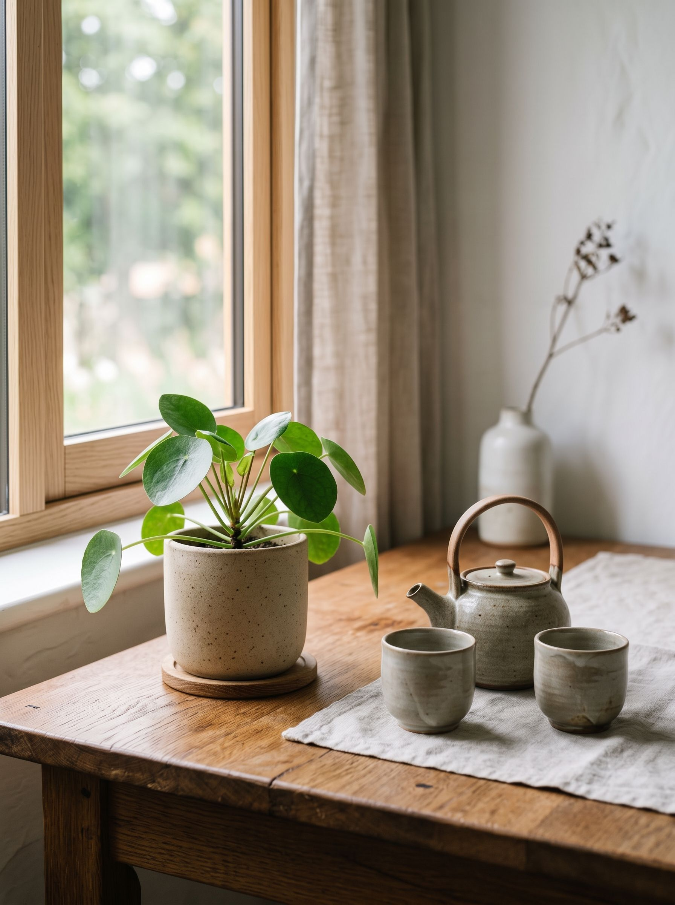
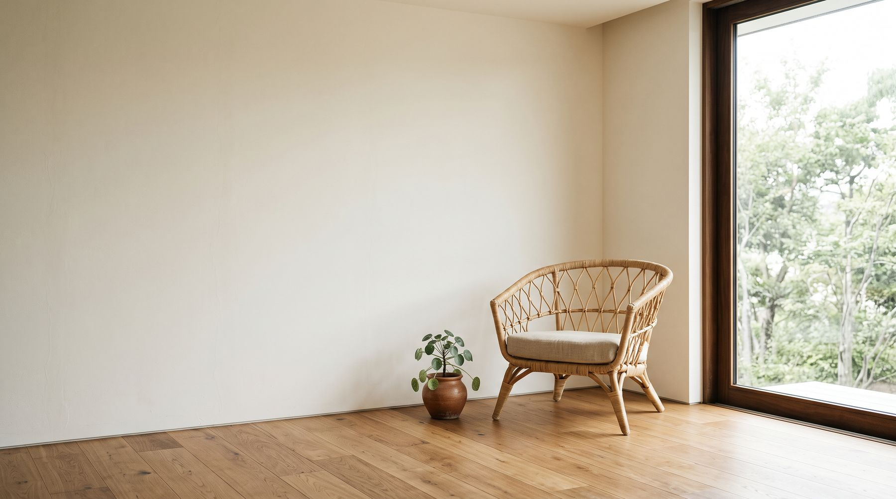

A relaxing living room doesn't need to be perfect.
It simply needs to feel warm, natural, comfortable, and personal.

Bring nature, warmth, and a touch of Eastern-inspired creativity into your everyday space.
A relaxing living room doesn't need to be perfect.
It simply needs to feel warm, natural, comfortable, and personal.

Choose materials that connect a room back to nature — wood, bamboo, rattan, linen, ceramic. These natural textures make a space feel softer, more grounded, and less staged.

A calm palette works best — cream, beige, warm white, soft brown, muted green. You don't need many colors. A few natural tones are enough to create a peaceful atmosphere.

Avoid relying only on bright overhead lights. Good lighting can instantly make a living room feel more cozy.

A small plant adds life without creating visual clutter. Then add one unexpected detail that reflects your personality — perhaps a handmade ceramic piece, a traditional tea set, or another object with an Eastern-inspired character.
The key is one meaningful detail, not many decorations.

Reduce unnecessary objects and leave some empty space. A relaxing living room can be as simple as:
That's enough to create a space where you can slow down and feel at ease.